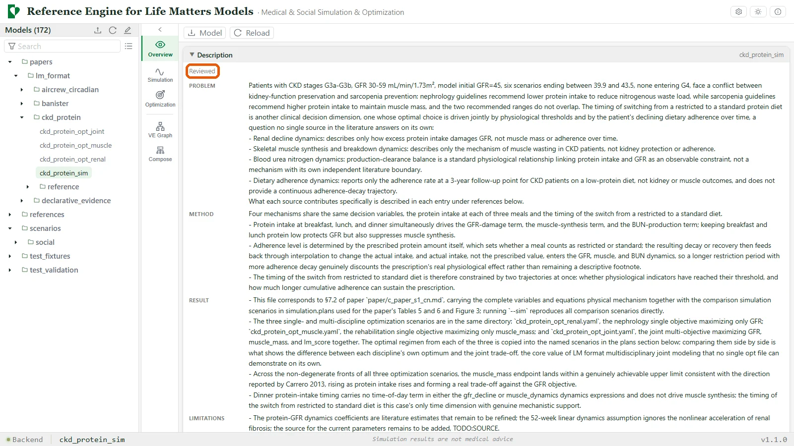
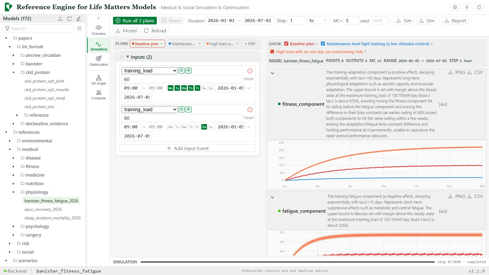
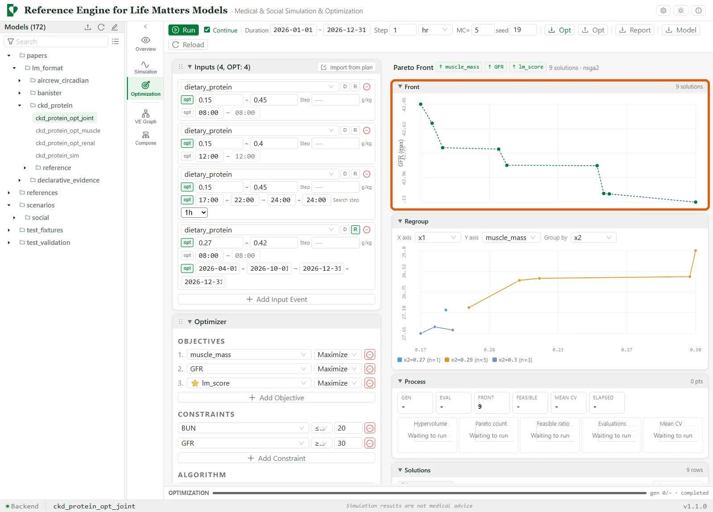
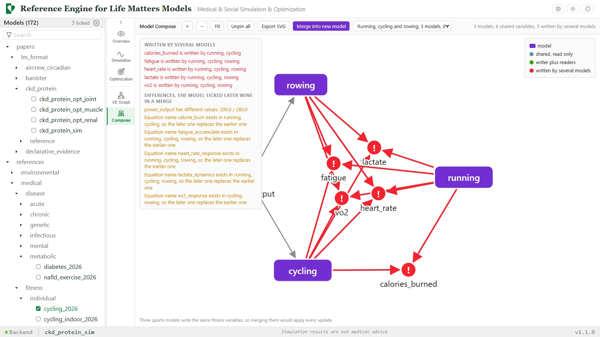

Life Matters
See what each choice costs.
Life Matters turns published research into models of daily life that you can run, so the trade-offs between goals become visible before you choose.
 The Past Is Yet to Come
The Past Is Yet to ComeWhat it does
- Turns the statistical findings of published studies into models written in plain YAML that anyone can read and run. Each parameter records the study it came from.
- Places mechanisms that were validated separately in different papers into the same model, so they interact.
- Searches for the best combinations of decisions. When goals conflict, it shows the trade-offs as a Pareto front and leaves the judgment to you.
A short tour
For a patient with chronic kidney disease at stage 3, protecting kidney function and keeping muscle both bear on protein intake, and each comes with its own recommended range. The CKD model in the library brings both together and looks for the balance between them.








What it is not
- Not a medical AI. It does not diagnose, prescribe or advise on treatment, and it does not replace a clinician.
- Not a digital twin of a body. It does not model any specific person or connect to personal health data.
- Not built on human medical data. Parameters come from summary results already published in papers.
- Not a single answer. When goals conflict it shows the trade-offs and leaves the judgment to the reader.
About Life Matters（大德曰生）
Fan Shen, School of Systems Science and Engineering, Sun Yat-sen University.
Review coverage of the models is limited, and comments and criticism are welcome. Write to shenfan@mail.sysu.edu.cn or shenfan19@gmail.com.
Fan Shen. Life Matters format: A YAML Specification for Behavioral Intervention Simulation and Optimization in Life Dynamics. Manuscript submitted for publication.
Releases and changes: latest release · changelog.